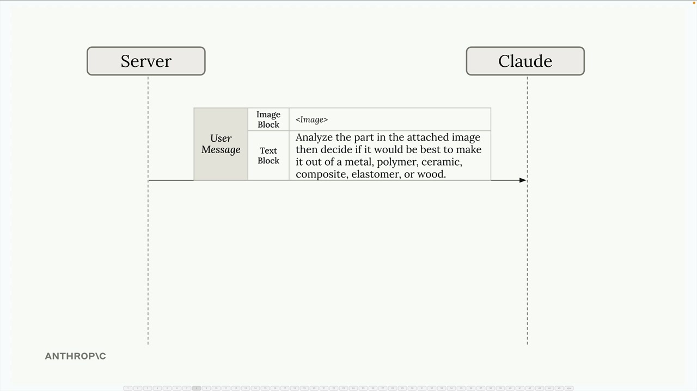
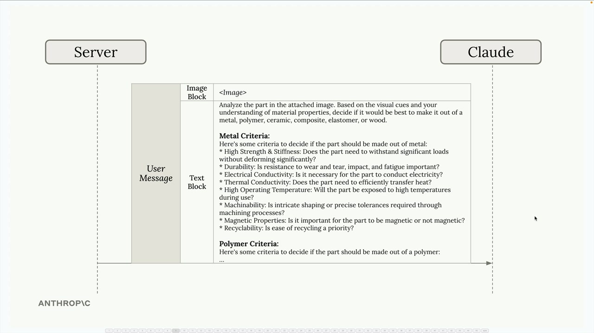
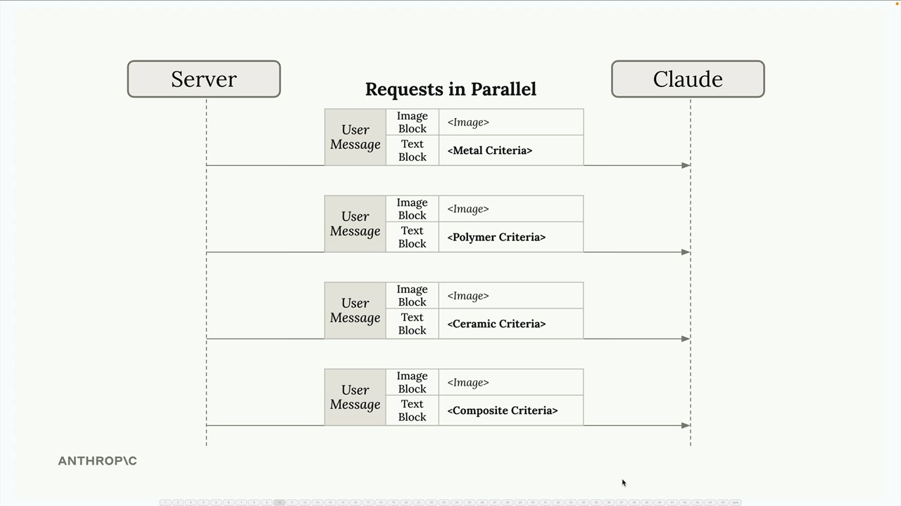
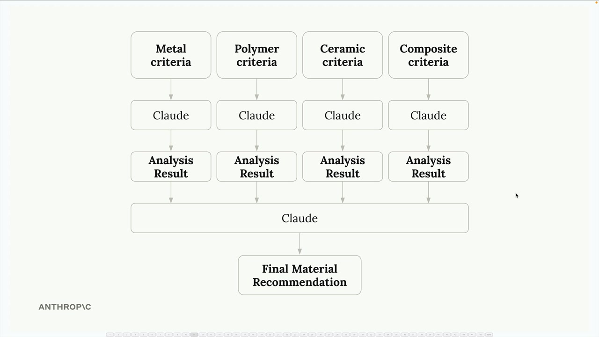
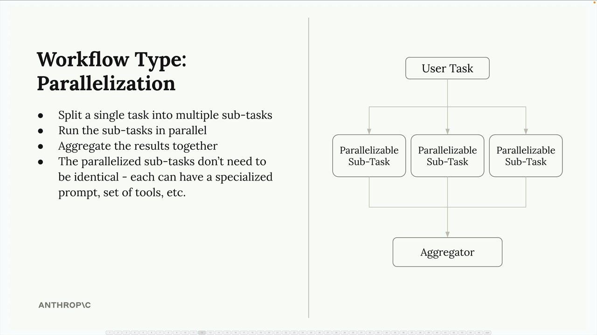

병렬화 워크플로우
AI 애플리케이션을 개발할 때, 표면적으로는 단순해 보이지만 효과적으로 구현하려고 하면 복잡해지는 작업을 자주 마주치게 됩니다. 복잡한 작업을 관리하기 쉽고 집중적인 단위로 분해하는 데 도움이 되는 강력한 패턴인 병렬화 워크플로우를 살펴보겠습니다.
복잡한 단일 프롬프트의 문제
사용자가 부품 이미지를 업로드하면 사용하기에 가장 적합한 소재를 추천받는 소재 설계 애플리케이션을 만든다고 상상해 보세요. 처음에는 금속, 폴리머, 세라믹, 복합재료, 엘라스토머, 또는 목재 중에서 선택하도록 Claude에게 간단한 프롬프트와 함께 이미지를 보내는 방법을 떠올릴 수 있습니다.

이 접근 방식이 작동할 수도 있지만, 단일 요청에서 Claude에게 많은 작업을 요청하게 됩니다. 각 소재 유형에 대한 구체적인 기준이 없으면 결과의 신뢰성이 떨어질 수 있습니다.
이를 개선하기 위해 각 소재에 대한 상세한 기준을 하나의 거대한 프롬프트에 추가하는 방법을 생각할 수 있습니다. 하지만 이렇게 하면 새로운 문제가 생깁니다. Claude가 이 모든 다양한 고려 사항을 동시에 처리해야 하므로 혼란과 최적화되지 않은 결과로 이어질 수 있습니다.

더 나은 접근 방식: 병렬화
모든 것을 하나의 요청에 몰아넣는 대신, 작업을 여러 개의 병렬 요청으로 분할할 수 있습니다. 각 요청은 특화된 기준을 사용하여 단일 소재 유형에 대한 부품 평가에 집중합니다.

작동 방식은 다음과 같습니다:
- 동일한 이미지를 Claude에게 동시에 여러 번 전송합니다
- 각 요청에는 하나의 소재에 대한 특화된 기준이 포함됩니다 (금속 기준, 폴리머 기준, 세라믹 기준 등)
- Claude는 각 소재에 대한 부품의 적합성을 독립적으로 평가합니다
- 모든 분석 결과를 수집하여 최종 집계 단계에 입력합니다

마지막 단계에서는 모든 개별 분석 결과를 Claude에게 다시 보내어 비교하고 최종 소재 추천을 요청합니다.
병렬화 워크플로우의 작동 원리
병렬화 패턴은 간단한 구조를 따릅니다:

- 단일 작업을 여러 하위 작업으로 분할 - 복잡한 결정을 집중적이고 특화된 평가로 세분화합니다
- 하위 작업을 병렬로 실행 - 더 빠른 처리를 위해 모든 평가를 동시에 실행합니다
- 결과를 함께 집계 - 특화된 분석들을 결합하여 최종 결정을 내립니다
- 병렬화된 하위 작업이 동일할 필요는 없음 - 각각 특화된 프롬프트, 도구 세트, 또는 평가 기준을 가질 수 있습니다
이 접근 방식의 장점
병렬화 워크플로우는 몇 가지 핵심 장점을 제공합니다:
집중된 주의: Claude는 여러 경쟁적인 고려 사항을 동시에 균형 잡으려 하는 대신, 한 번에 하나의 특정 측면에 집중할 수 있습니다. 이를 통해 각 소재 유형에 대해 더욱 철저하고 정확한 분석이 가능합니다.
더 쉬운 최적화: 각 소재 평가에 대한 프롬프트를 독립적으로 개선하고 테스트할 수 있습니다. 금속 분석이 잘 작동하지 않는다면, 다른 것에 영향을 주지 않고 해당 프롬프트만 개선할 수 있습니다.
더 나은 확장성: 평가할 새로운 소재를 추가하는 것이 간단합니다. 병렬 요청을 하나 더 추가하기만 하면 됩니다. 기존 프롬프트를 다시 작성하거나 새로운 기준이 기존 기준과 어떻게 충돌할지 걱정할 필요가 없습니다.
향상된 신뢰성: 복잡한 작업을 분해함으로써 AI 모델의 인지 부하를 줄이고 더 일관되고 신뢰할 수 있는 결과를 얻을 수 있습니다.
병렬화를 사용해야 할 때
이 패턴은 독립적인 평가로 분해할 수 있는 복잡한 결정이 있을 때 효과적입니다. AI에게 여러 기준을 고려하거나, 여러 옵션을 비교하거나, 다양한 전문 분야와 관련된 결정을 내리도록 요청하는 상황을 찾아보세요.
핵심은 의미 있게 분리할 수 있는 작업을 식별하는 것입니다. 각 병렬 하위 작업은 독립적으로 작동하고 최종 결정에 고유한 분석 기여를 할 수 있어야 합니다.